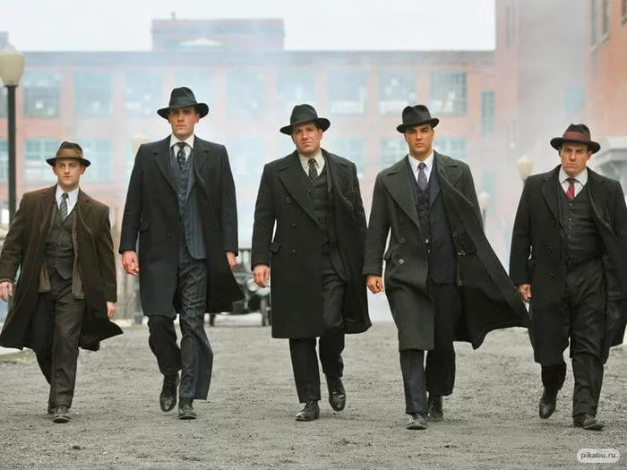
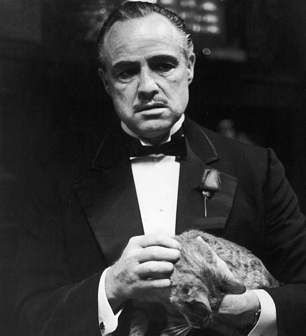
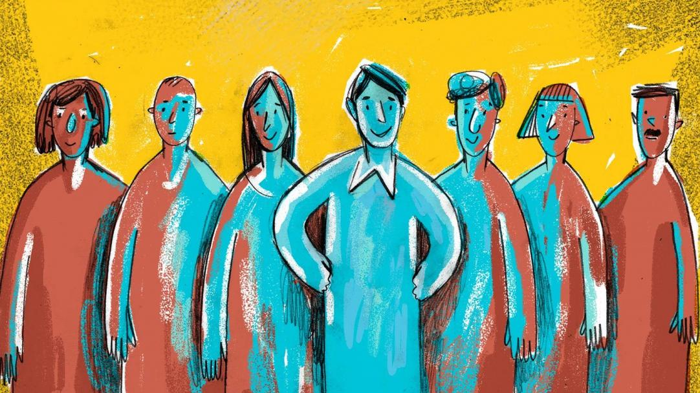
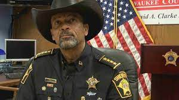

Игровые роли |
|
МЕНЮИгровые ролиПравила игрыНеобходимое для проведения игрыГлавная страница |
Ее представители играют против мирных жителей. Ночью они убивают горожан, а днем на собрании стараются вывести их из игры.  Глава мафиозного клана. В первую ночь он определяет порядок убийств горожан (то есть объявляет договорку. ДОГОВОРКА. ночью просыпаются все мафиози и оговаривают очерёдность убийств. То есть кого они убьют первым (в первую ночь), кого вторым (во вторую ночь). Таким образом мафия обсуждает план на три ночи. Правила Питерской мафии отличаются от Московской. Обычно в Питерской мафии, мафия просыпается каждую ночь и показывают пальцем кого хотят убить. Но в Московской мафии договорка происходит в первую ночь, а затем игрокам запрещается открывать глаза. Поэтому им приходится запоминать порядок убийств. Они с закрытами галазами должны сделать специальный жест рукой (делая вид, что выстреливаете из пистолета) именно в тот момент, когда ведущий называет номера участников (Ведущий говорит таким образом " Мафия просыпается, достают свои пистолеты. Проходятся по игрокам под номером один, два, три, четыре и т.д.")  Мирные жители – основные персонажи игры. Путем логических умозаключений и интуиции они борются против мафии и пытаются ее уничтожить.  Шериф не любит мафию. Он может просыпаться ночью и получать от ведущего с помощью условных знаков достоверную информацию о том, кто из игроков относится к мафии.  |